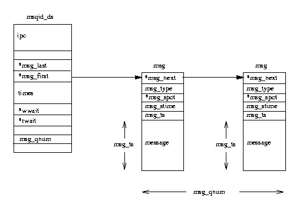

Table of Contents,
Show Frames,
No Frames

Processes communicate with each other and with the kernel to coordinate their activities.
Linux supports a number of Inter-Process Communication (IPC) mechanisms.
Signals and pipes are two of them but Linux also supports the System V IPC mechanisms
named after the Unix TM release in which they first appeared.
5.1 Signals
Signals are one of the oldest inter-process communication methods used by Unix TM systems.
They are used to signal asynchronous events to one or more processes.
A signal could be generated by a keyboard interrupt or an error condition such as the
process attempting to access a non-existent location in its virtual memory.
Signals are also used by the shells to signal job control commands to their child processes.
There are a set of defined signals that the kernel can generate or that can be
generated by other processes in the system, provided that they have the correct
privileges.
You can list a system's set of signals using the kill command (kill -l), on my Intel
Linux box this gives:
1) SIGHUP 2) SIGINT 3) SIGQUIT 4) SIGILL
5) SIGTRAP 6) SIGIOT 7) SIGBUS 8) SIGFPE
9) SIGKILL 10) SIGUSR1 11) SIGSEGV 12) SIGUSR2
13) SIGPIPE 14) SIGALRM 15) SIGTERM 17) SIGCHLD
18) SIGCONT 19) SIGSTOP 20) SIGTSTP 21) SIGTTIN
22) SIGTTOU 23) SIGURG 24) SIGXCPU 25) SIGXFSZ
26) SIGVTALRM 27) SIGPROF 28) SIGWINCH 29) SIGIO
30) SIGPWR
The numbers are different for an Alpha AXP Linux box.
Processes can choose to ignore most of the signals that are generated, with two notable
exceptions: neither the SIGSTOP signal which causes
a process to halt its execution nor the SIGKILL signal which causes a process to
exit can be ignored.
Otherwise though, a process can choose just how it wants to handle the various signals.
Processes can block the signals and, if they do not block them, they can either choose
to handle them themselves or allow the kernel to handle them.
If the kernel handles the signals, it will do the default actions required for this
signal.
For example, the default action when a process receives the SIGFPE (floating point
exception) signal is to core dump and then exit.
Signals have no inherent relative priorities.
If two signals are generated for a process at the same time then they may be presented
to the process or handled in any order.
Also there is no mechanism for handling multiple signals of the same kind.
There is no way that a process can tell if it received 1 or 42 SIGCONT signals.
Linux implements signals using information stored in the task_struct for the process.
The number of supported signals is limited to the word size of the processor.
Processes with a word size of 32 bits can have 32 signals whereas 64 bit processors like the
Alpha AXP may have up to 64 signals.
The currently pending signals are kept in the signal field with a mask of blocked
signals held in blocked.
With the exception of SIGSTOP and SIGKILL, all signals can be blocked.
If a blocked signal is generated, it remains pending until it is unblocked.
Linux also holds information about how each process handles every possible signal and this
is held in an array of sigaction data structures pointed at by the task_struct
for each process.
Amongst other things it contains either the address of a routine that will handle
the signal or a flag which tells Linux that the process either wishes to ignore this
signal or let the kernel handle the signal for it.
The process modifies the default signal handling by making system calls and these calls
alter the sigaction for the appropriate signal as well as the blocked mask.
Not every process in the system can send signals to every other process, the
kernel can and super users can.
Normal processes can only send signals to processes with the same uid and gid or
to processes in the same process group1.
Signals are generated by setting the appropriate bit in the task_struct's signal
field.
If the process has not blocked the signal and is
waiting but interruptible (in state Interruptible) then it is woken up
by changing its state to Running and making sure that it is in the run queue.
That way the scheduler will consider it a candidate for running when the system next
schedules.
If the default handling is needed, then Linux can optimize the handling of the signal.
For example if the signal SIGWINCH (the X window changed focus) and the
default handler is being used then there is nothing to be done.
Signals are not presented to the process immediately they are generated., they
must wait until the process is running again.
Every time a process exits from a system call its signal and blocked fields
are checked and, if there are any unblocked signals, they can now be delivered.
This might seem a very unreliable method but every process in the system is making
system calls, for example to write a character to the terminal, all of the time.
Processes can elect to wait for signals if they wish, they are suspended in
state Interruptible until a signal is presented.
The Linux signal processing code looks at the sigaction structure for each of
the current unblocked signals.
If a signal's handler is set to the default action then the kernel will handle it.
The SIGSTOP signal's default handler will change the current process's state
to Stopped and then run the scheduler to select a new process to run.
The default action for the SIGFPE signal will core dump the process and then
cause it to exit.
Alternatively, the process may have specfied its own signal handler.
This is a routine which will be called whenever the signal is generated and the
sigaction structure holds the address of this routine.
The kernel must call the process's signal handling routine and how this happens
is processor specific but all CPUs must cope with the fact that the current process
is running in kernel mode and is just about to return to the process that called the
kernel or system routine in user mode.
The problem is solved by manipulating the stack and registers of the process.
The process's program counter is set to the address of its signal handling routine
and the parameters to the routine are added to the call frame or passed in registers.
When the process resumes operation it appears as if the signal handling routine were
called normally.
Linux is POSIX compatible and so the process can specify which signals are blocked
when a particular signal handling routine is called.
This means changing the blocked mask during the call to the processes signal handler.
The blocked mask must be returned to its original value when the signal handling
routine has finished.
Therefore Linux adds a call to a tidy up routine which will restore the original
blocked mask onto the call stack of the signalled process.
Linux also optimizes the case where several signal handling routines need to be called
by stacking them so that each time one handling routine exits, the next one is called
until the tidy up routine is called.
The common Linux shells all allow redirection.
For example
$ ls | pr | lpr
pipes the output from the ls command listing the directory's files into the
standard input of the pr command which paginates them.
Finally the standard output from the pr command is piped into the standard
input of the lpr command which prints the results on the default printer.
Pipes then are unidirectional byte streams which connect the standard output from
one process into the standard input of another process.
Neither process is aware of this redirection and behaves just as it would normally.
It is the shell which sets up these temporary pipes between the processes.
Figure 5.1: Pipes
In Linux, a pipe is implemented using two file data structures which both
point at the same temporary VFS inode which itself points at a physical page within
memory.
Figure 5.1 shows that each file data structure contains
pointers to different file operation routine vectors; one for writing to
the pipe, the other for reading from the pipe.
This hides the underlying differences from the generic system calls which read and
write to ordinary files.
As the writing process writes to the pipe, bytes are copied into the shared data page
and when the reading process reads from the pipe, bytes are copied from the shared data
page.
Linux must synchronize access to the pipe.
It must make sure that the reader and the writer of the pipe are in step and to do this
it uses locks, wait queues and signals.
When the writer wants to write to the pipe it uses the standard
write library functions.
These all pass file descriptors that are indices into the process's set of
file data structures, each one representing an open file or, as in this case, an open
pipe.
The Linux system call uses the write routine pointed at by the file data structure
describing this pipe.
That write routine uses information held in the VFS inode representing the pipe to
manage the write request.
If there is enough room to write all of the bytes into the pipe and, so long
as the pipe is not locked by its reader, Linux locks it for the writer and copies the bytes
to be written from the process's address space into the shared data page.
If the pipe is locked by the reader or if there is not enough room for the data then
the current process is made to sleep on the pipe inode's wait queue and the scheduler
is called so that another process can run.
It is interruptible, so it can receive signals and it will be woken by the reader
when there is enough room for the write data or when the pipe is unlocked.
When the data has been written, the pipe's VFS inode is unlocked and any waiting
readers sleeping on the inode's wait queue will themselves be woken up.
Reading data from the pipe is a very similar process to writing to it.
Processes are allowed to do non-blocking reads (it depends on the mode in
which they opened the file or pipe) and, in this case, if there is no data
to be read or if the pipe is locked, an error will be returned.
This means that the process can continue to run.
The alternative is to wait on the
pipe inode's wait queue until the write process has finished.
When both processes have finished with the pipe, the pipe inode is discarded along
with the shared data page.
Linux also supports named pipes, also known as FIFOs because pipes operate
on a First In, First Out principle.
The first data written into the pipe is the first data read from the pipe.
Unlike pipes, FIFOs are not temporary objects, they are entities in the file system
and can be created using the mkfifo command.
Processes are free to use a FIFO so long as they have appropriate access rights to it.
The way that FIFOs are opened is a little different from pipes.
A pipe (its two file data structures, its VFS inode and the shared data page) is
created in one go whereas a FIFO already exists and is opened and closed by its users.
Linux must handle readers opening the FIFO before writers open it as well as readers
reading before any writers have written to it.
That aside, FIFOs are handled almost exactly the same way as pipes and they use the
same data structures and operations.
5.3 Sockets
REVIEW NOTE: Add when networking chapter written.
5.3.1 System V IPC Mechanisms
Linux supports three types of interprocess communication mechanisms that first
appeared in Unix TM System V (1983).
These are message queues, semaphores and shared memory.
These System V IPC mechanisms all share common authentication methods.
Processes may access these resources only by passing a unique reference identifier
to the kernel via system calls.
Access to these System V IPC objects is checked using access permissions, much like
accesses to files are checked.
The access rights to the System V IPC object is set by the creator of the object
via system calls.
The object's reference identifier is used by each mechanism as an index into a table of
resources.
It is not a straight forward index but requires some manipulation to
generate the index.
All Linux data structures representing System V IPC objects in the system include an ipc_perm
structure which contains the owner and creator process's user and group identifiers.
The access mode for this object (owner, group and other) and the IPC object's key.
The key is used as a way of locating the System V IPC object's reference identifier.
Two sets of keys are supported: public and private.
If the key is public then any process in the system, subject to rights checking, can
find the reference identifier for the System V IPC object.
System V IPC objects can never be referenced with a key, only by their reference
identifier.
5.3.2 Message Queues
Message queues allow one or more processes to write messages, which will be
read by one or more reading processes.
Linux maintains a list of message queues, the msgque vector; each element
of which points to a msqid_ds data structure that fully describes the message
queue.
When message queues are created a new msqid_ds data structure is allocated
from system memory and inserted into the vector.

Figure 5.2: System V IPC Message Queues
Each msqid_ds
data structure contains an ipc_perm data structure and pointers
to the messages entered onto this queue.
In addition, Linux keeps queue modification times such as the last time that this
queue was written to and so on.
The msqid_ds also contains two wait queues; one for the writers to the queue and
one for the readers of the message queue.
Each time a process attempts to write a message to the write queue its effective
user and group identifiers are compared with the mode in this queue's ipc_perm
data structure.
If the process can write to the queue then the message may be copied from the process's
address space into a msg
data structure and put at the end of this message queue.
Each message is tagged with an application specific type, agreed between the cooperating
processes.
However, there may be no room for the message as Linux restricts the number and length
of messages that can be written.
In this case the process will be added to this message queue's write wait queue and the
scheduler will be called to select a new process to run.
It will be woken up when one or more messages have been read from this message queue.
Reading from the queue is a similar process.
Again, the processes access rights to the write queue are checked.
A reading process may choose to either get the first message in the queue regardless
of its type or select messages with particular types.
If no messages match this criteria the reading process will be added to the
message queue's read wait queue and the scheduler run.
When a new message is written to the queue this process will be woken up and run again.
5.3.3 Semaphores
In its simplest form a semaphore is a location in memory whose value can be
tested and set by more than one process.
The test and set operation is, so far as each process is concerned, uninterruptible or
atomic; once started nothing can stop it.
The result of the test and set operation is the addition of the current value of
the semaphore and the set value, which can be positive or negative.
Depending on the result of the test and set operation one process may have to sleep
until the semphore's value is changed by another process.
Semaphores can be used to implement critical regions, areas of critical code
that only one process at a time should be executing.
Say you had many cooperating processes reading records from and writing records to a
single data file.
You would want that file access to be strictly coordinated.
You could use a semaphore with an initial value of 1 and, around the file operating
code, put two semaphore operations, the first to test and decrement the semaphore's
value and the second to test and increment it.
The first process to access the file would try to decrement the semaphore's value and
it would succeed, the semaphore's value now being 0.
This process can now go ahead and use the data file but if another process wishing to
use it now tries to decrement the semaphore's value it would fail as the result would
be -1.
That process will be suspended until the first process has finished with the data file.
When the first process has finished with the data file it will increment the semaphore's
value, making it 1 again.
Now the waiting process can be woken and this time its attempt to increment the
semaphore will succeed.

Figure 5.3: System V IPC Semaphores
System V IPC semaphore objects each describe a semaphore array and Linux uses the
semid_ds
data structure to represent this.
All of the semid_ds data structures in the system are pointed at by
the semary, a vector of pointers.
There are sem_nsems in each semaphore array, each one described by a
sem data structure pointed at by sem_base.
All of the processes that are allowed to manipulate the semaphore array of a System
V IPC semaphore object may make system calls that perform operations on them.
The system call can specify many operations and
each operation is described by three inputs; the semaphore index, the operation value and
a set of flags.
The semaphore index is an index into the semaphore array and the operation value is
a numerical value that will be added to the current value of the semaphore.
First Linux tests whether or not all of the operations would succeed.
An operation will succeed if the operation value added to the semaphore's current
value would be greater than zero or if both the operation value and the semaphore's
current value are zero.
If any of the semaphore operations would fail Linux may suspend the process but
only if the operation flags have not requested that the system call is non-blocking.
If the process is to be suspended then Linux must save the state of
the semaphore operations to be performed and put the current process onto a wait
queue.
It does this by building a sem_queue
data structure on the stack and filling it out.
The new sem_queue data structure is put at the end of this semaphore
object's wait queue (using the sem_pending and sem_pending_last
pointers).
The current process is put on the wait queue in the sem_queue data structure
(sleeper) and the scheduler called to choose another process to run.
If all of the semaphore operations would have succeeded and the current process
does not need to be suspended, Linux goes ahead and applies the operations to the
appropriate members of the semaphore array.
Now Linux must check that any waiting, suspended, processes may now apply their
semaphore operations.
It looks at each member of the operations pending queue (sem_pending) in
turn, testing to see if the semphore operations will succeed this time.
If they will then it removes the sem_queue data structure from the operations
pending list and applies the semaphore operations to the semaphore array.
It wakes up the sleeping process making it available to be restarted the next time the
scheduler runs.
Linux keeps looking through the pending list from the start until there is a pass
where no semaphore operations can be applied and so no more processes can be woken.
There is a problem with semaphores, deadlocks.
These occur when one process has altered the semaphores value as it enters
a critical region but then fails to leave the critical region because it crashed
or was killed.
Linux protects against this by maintaining lists of adjustments to the semaphore
arrays.
The idea is that when these adjustments are applied, the semaphores will be put back
to the state that they were in before the a process's set of semaphore operations
were applied.
These adjustments are kept in sem_undo data
structures queued both on the semid_ds data structure and on the task_struct
data structure for the processes using these semaphore arrays.
Each individual semaphore operation may request that an adjustment be maintained.
Linux will maintain at most one sem_undo data structure per process for each
semaphore array.
If the requesting process does not have one, then one is created when it is needed.
The new sem_undo data structure is queued both onto this process's task_struct
data structure and onto the semaphore array's semid_ds data structure.
As operations are applied to the semphores in the semaphore array the negation of
the operation value is added to this semphore's entry in the adjustment array of
this process's sem_undo data structure.
So, if the operation value is 2, then -2 is added to the adjustment entry for this
semaphore.
When processes are deleted, as they exit Linux works through their set of
sem_undo data structures applying the adjustments to the semaphore arrays.
If a semaphore set is deleted, the sem_undo data structures are left queued
on the process's task_struct but the semaphore array identifier is made
invalid.
In this case the semaphore clean up code simply discards the sem_undo data
structure.
5.3.4 Shared Memory
Shared memory allows one or more processes to communicate via memory that appears
in all of their virtual address spaces.
The pages of the virtual memory is referenced by page table entries in each of the
sharing processes' page tables.
It does not have to be at the same address in all of the processes' virtual memory.
As with all System V IPC objects, access to shared memory areas is controlled via
keys and access rights checking.
Once the memory is being shared, there are no checks on how the processes are using
it.
They must rely on other mechanisms, for example System V semaphores, to synchronize
access to the memory.
Figure 5.4: System V IPC Shared Memory
Each newly created shared memory area is represented by a shmid_ds data structure.
These are kept in the shm_segs vector.
The shmid_ds data structure decribes how big the area of shared memory is, how
many processes are using it and information about how that shared memory is mapped into
their address spaces.
It is the creator of the shared memory that controls the access permissions to that
memory and whether its key is public or private.
If it has enough access rights it may also lock the shared memory into physical memory.
Each process that wishes to share the memory must attach to that virtual memory via a
system call.
This creates a new vm_area_struct data structure describing the shared memory
for this process.
The process can choose where in its virtual address space the shared memory goes or
it can let Linux choose a free area large enough.
The new vm_area_struct structure is put into the list of vm_area_struct
pointed at by the shmid_ds.
The vm_next_shared and vm_prev_shared pointers are used to link them together.
The virtual memory is not actually created during the attach; it happens when the first
process attempts to access it.
The first time that a process accesses one of the pages of the shared virtual memory, a page
fault will occur.
When Linux fixes up that page fault it finds the vm_area_struct data structure
describing it.
This contains pointers to handler routines for this type of shared virtual memory.
The shared memory page fault handling code looks in the list of page table entries for
this shmid_ds to see if one exists for this page of the shared virtual
memory.
If it does not exist, it will allocate a physical page and create a page table entry
for it.
As well as going into the current process's page tables, this entry is saved in
the shmid_ds.
This means that when the next process that attempts to access this memory gets a
page fault, the shared memory fault handling code will use this newly created
physical page for that process too.
So, the first process that accesses a page of the shared memory causes it to be
created and thereafter access by the other processes cause that page to be added
into their virtual address spaces.
When processes no longer wish to share the virtual memory, they detach from it.
So long as other processes are still using the memory the detach only affects the
current process.
Its vm_area_struct is removed from the shmid_ds data structure and
deallocated.
The current process's page tables are updated to invalidate the area of virtual
memory that it used to share.
When the last process sharing the memory detaches from it, the pages of the shared
memory current in physical memory are freed, as is the shmid_ds data structure
for this shared memory.
Further complications arise when shared virtual memory is not locked into physical
memory.
In this case the pages of the shared memory may be swapped out to the system's
swap disk during periods of high memory usage.
How shared memory memory is swapped into and out of physical memory is described
in Chapter mm-chapter.
Footnotes:
1 REVIEW NOTE: Explain process groups.
File translated from TEX by TTH, version 1.0.
Top of Chapter,
Table of Contents,
Show Frames,
No Frames
© 1996-1999 David A Rusling copyright notice.